| Interaction | Parameters |
|---|---|
| type 1 | \(\nu_{it} = \theta_i \otimes \gamma_t\) |
| type 2 | \(\nu_{it} = \theta_i \otimes \xi_t\) |
| type 3 | \(\nu_{it} = \phi_i \otimes \gamma_t\) |
| type 4 | \(\nu_{it} = \phi_i \otimes \xi_t\) |
Spatial and Spatio-temporal Modelling
Aug 15, 2025
Introduction
What is spatial modelling?
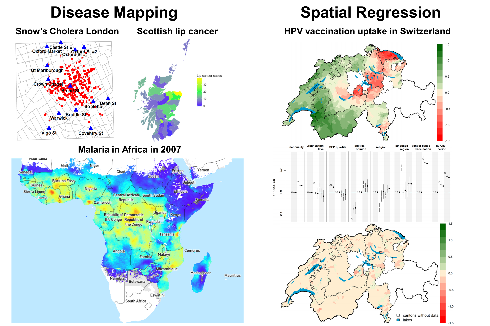
It is also geostatistics
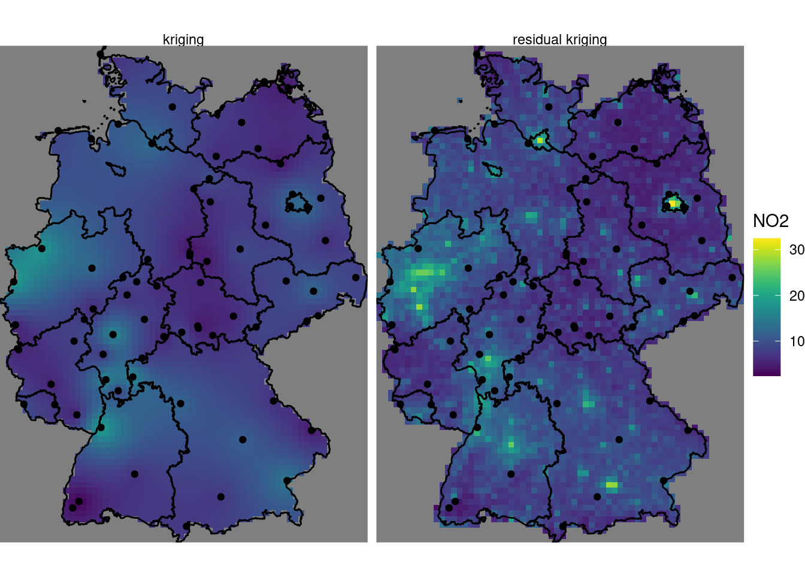
Type of data
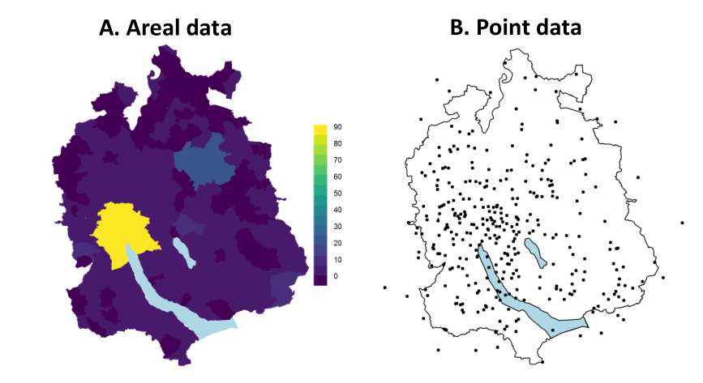
Why do we need more complex models?
- In disease mapping estimates of disease risk can be unstable, leading to non-meaningful maps
- Accounting for residual spatial autocorrelation is important to have the correct uncertainty
- Sometimes they pick up unknown spatial confounding, leading to unbiased estimators
Structure of the talk
- Disease mapping and smoothing
- Global smoothing
- Local smoothing
- Examples
Disease mapping and smoothing
Disease mapping - background
- To summarise spatial and spatio-temporal variation in disease risk
- Rare disease and/or small areas: Poisson framework \[O_i \sim \text{Poisson}(\lambda_i E_i)\] where \(E_i\) is the expected nb of cases and \(\lambda_i=\text{SMR}\) in area \(i\).
- Non smoothed estimates of the SMR: \[\text{SMR}_i = \frac{O_i}{E_i},\;\text{and} \;\text{Var(SMR)}_i = \frac{O_i}{E_i^2}\]
Issues with crude RR estimates
Calculating crude (non-smoothed) estimates of the SMR can be problematic:
- SMR is estimated independently: does not account for spatial correlation, ie makes no use of SMR estimates in other areas of the map, even though these are likely to be similar.
- They are very imprecise: areas with small \(E_i\) have high associated variance.
Example with childhood cancers in Switzerland
- Rare cancers (6,000 cases in 31 years)
- Little known about causes, potential clusters
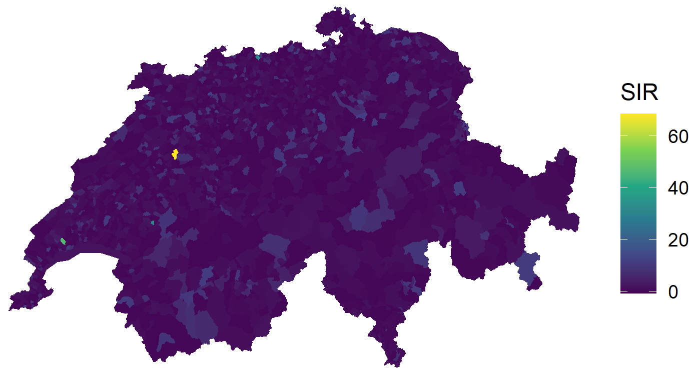
Example with childhood cancers in Switzerland
- Quartiles and 0s a separate category
- Is this map informative?
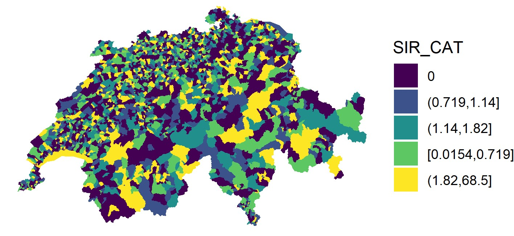
Hierarchical modelling to smooth rates
- Globally: Smooth the rates towards the global mean.
- Locally: Smooth the rates towards the local mean, using information about the adjacency structure.
- Globally + Locally: Smooth the rates using information about the global mean and the adjacency structure
Global smoothing
\[ O_i \sim \text{Poisson}(\lambda_i E_i) \\ \log \lambda_i = \alpha + \theta_i \\ \theta_i \sim \text{Normal}(0,\sigma_{\theta}^2) \] \(\theta_i\): area specific random effects to account for overdispersion
- excess variation in the observed counts due to random noise
- latent variable which captures the effects of unknown or unmeasured area level covariates
\(\exp(\theta_i)\): RR in area i, relative to the overall SMR/SIR
Example with childhood cancers in Switzerland
- Plot \(exp(\alpha + \theta_i)\)
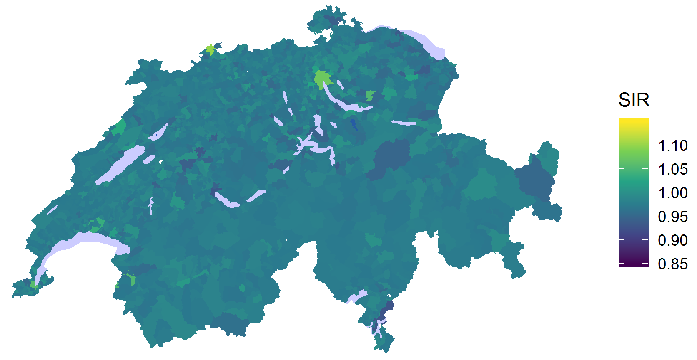
Issues with global smoothing
- Poisson-logNormal model assumes identically distributed and independent data.
- Data that occur close together in space are likely to be correlated (Dependence assumption more realistic).
- Ignoring spatial dependence can lead to biased and inefficient inference.
- Interest in estimating the relationship between location and outcome.
Local smoothing: prior distribution for the random effects allowing for spatial correlation to help uncover spatial patterns
Specify a distribution which takes into account information
- Specify a distribution which takes into account information on neighbouring areas (adjacency matrix).
- Rule for determining the neighbours of each area: most common based on common boundary.
- Estimate spatial random effect for each area as if we knew the values of the spatial random effects in neighbouring areas
- Use of conditional autoregressive distributions (we are conditioning on knowing the neighbours)
Example: Queen contiguity in Switzerland (Cantons)
Let \(\partial_i=\) set if area adjacent to \(i\)
\[ w = \begin{cases} 1, \; \text{if} \; j\in \partial_i \\\\0 \; \text{otherwise} \end{cases} \]
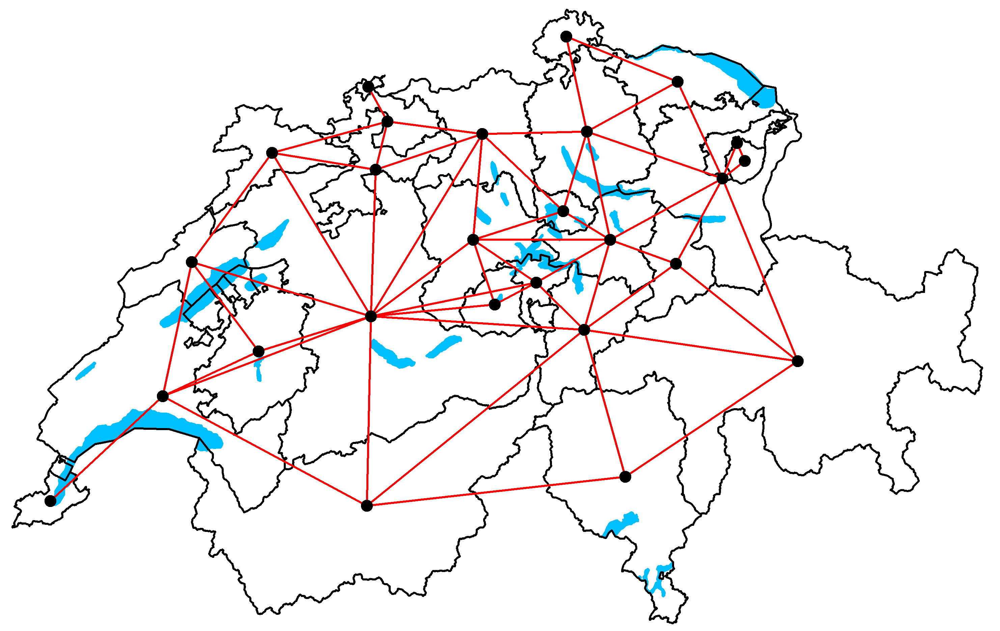
Intrinsic ICAR model (Besag et al. 1991)
\[ \phi \sim \text{ICAR}(W, \sigma^2_{\phi}) \Leftrightarrow \phi_i | \phi_{j\; j\ne i} \sim \text{Normal}(\phi_i, \sigma_{\phi}^2) \]
\[ E(\phi_i|\phi_j) = \sum_{j \in \partial_i \phi_j} \phi_j/n_i \\ Var(\phi_i|\phi_j) = \sigma_{\phi}^2/n_i \]
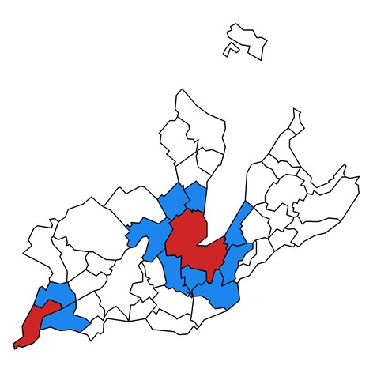
Example with childhood cancers in Switzerland (cont)
- Plot \(exp(\alpha + \phi_i)\)
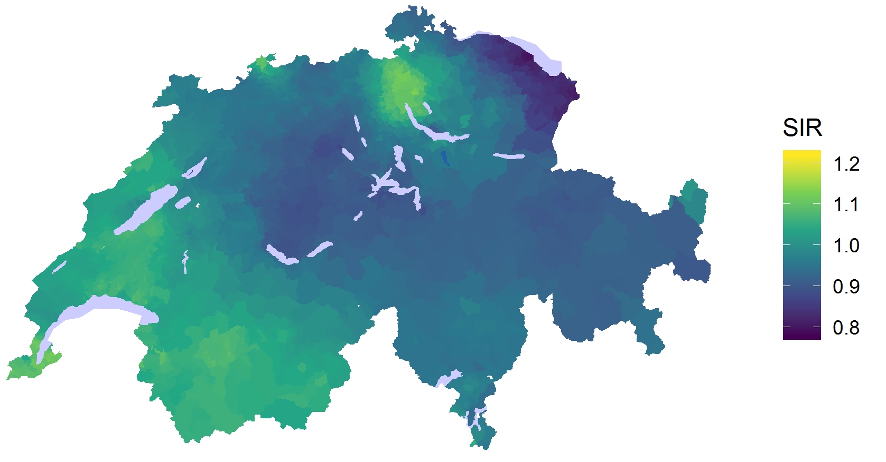
The Besag-York-Mollie model
Local+Global smoothing: \[ O_i \sim \text{Poisson}(\lambda_i E_i) \\ \log \lambda_i = \alpha + \theta_i + \phi_i \\ \theta_i \sim \text{Normal}(0,\sigma_{\theta}^2)\\ \phi \sim \text{ICAR}(W, \sigma^2_{\phi}) \] priors for \(\alpha, \sigma_{\theta}^2 \; \text{and} \; \sigma^2_{\phi}\)
Example with childhood cancers in Switzerland (cont)
- Plot \(exp(\alpha + \theta_i + \phi_i)\)
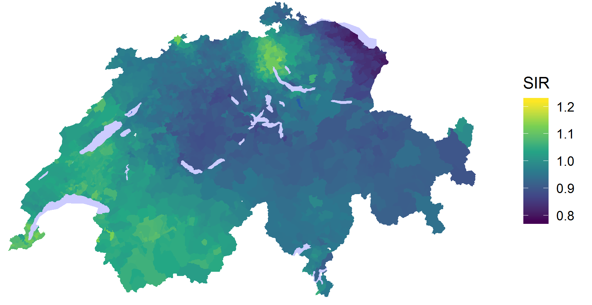
Use BYM with care
- ICAR model defined above is improper: the overall mean of the \(\phi_i\) is not defined: sum-to-zero contraints
- Inference may be sensitive to choice of hyperprior for the random effects variance or precision parameters
- Other known issues we have not discussed about: different interpretation of the variances (marginal conditional), scalling the covariance matrix, etc.
Other CAR models
Let \(\log \lambda_i = \alpha + b_i\):
- The proper CAR \[ b_i|b_j \sim \text{Normal}(\rho \sum_{j \in \partial_i}b_j/n_i, \sigma_b^2/n_i) \]
- Leroux CAR prior \[ b_i|b_j \sim \text{Normal}\Bigg(\frac{\rho \sum_{j \in \partial_i}b_j}{\rho n_i + (1 - \rho)}, \frac{\sigma_b^2}{{\rho n_i + (1 - \rho)}}\Bigg) \]
Other CAR models
BYM2 \[ b = \sigma_b*(\sqrt{1 - \rho}\theta + \sqrt{\rho}\phi) \\ \theta \sim \text{Normal}(\sigma_{\theta}^2)\\ \phi \sim \text{ICAR}(W^*, \sigma_{\phi}^2) \]
Adaptive CARs
Posterior Probability
- Mapping the posterior mean RR does (or residual RR) not make full use of the output of the Bayesian analysis that provides, for each area, samples from the whole posterior distribution of the relative risk.
- Mapping the probability that a RR is greater than a specified threshold of interest has been proposed by several authors (e.g. Clayton and Bernardinelli (1992)).
- Very effective method to identify areas characterised by elevated risk
How to classify areas as having elevated risk
- We define the decision rule \(D(c, \text{RR}_0)\), which depends:
- on a cutoff probability \(c\)
- a reference threshold \(\text{RR}_0\)
- Area \(i\) is classified as having an elevated risk according to \(D(c, \text{RR}_0) : Prob(\text{RR}_i > \text{RR}_0) > c\)
- Recommended values \(c = 0.8\) and \(\text{RR}_0 = 1\) (Richardson et al. 2004)
- Posterior probability of interest: \(\text{Prob}(\exp(\theta_i+ \phi_i) > 1)\)
Example with childhood cancers in Switzerland
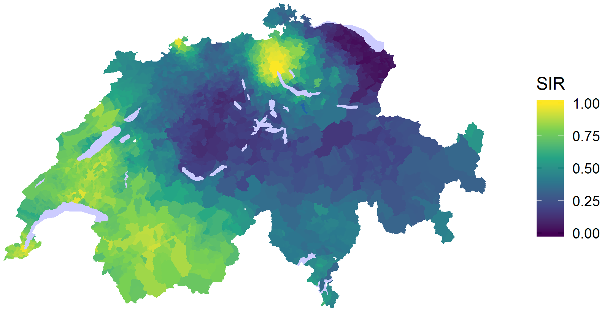
Example with childhood cancers in Switzerland
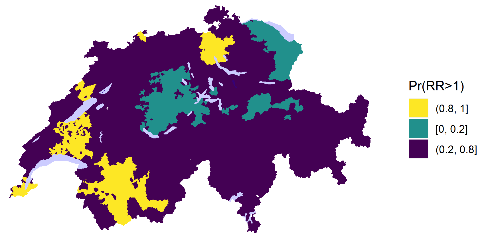
Ecological regression
Extending to ecological regression
Straightforward extension of the BYM (read any CAR) model:
\[ O_i \sim \text{Poisson}(\lambda_i E_i) \\ \log \lambda_i = \alpha + \color{red}{\beta X_i} + \theta_i + \phi_i \\ \theta_i \sim \text{Normal}(0,\sigma_{\theta}^2)\\ \phi \sim \text{ICAR}(W, \sigma^2_{\phi}) \]
- \(\color{red}{X}\) area-level covariate of interest
- \(\color{red}{\beta}\): parameter associated with the covariate (assigned a prior)
Interpretation of the parameters
- \(\exp(\beta)\) is the relative risk of disease associated with a unit increase in exposure \(X\) (when X continuous)
- \(\exp(\theta_i + \phi_i)\) is the residual or adjusted relative risk of disease in area \(i\) after accounting for the effect of \(X\).
Extension to several variables
\[ O_i \sim \text{Poisson}(\lambda_i E_i) \\ \log \lambda_i = \alpha + \color{red}{\beta_1 X_{1i} + \dots + \beta_k X_{ki}} + \theta_i + \phi_i \\ \theta_i \sim \text{Normal}(0,\sigma_{\theta}^2)\\ \phi \sim \text{ICAR}(W, \sigma^2_{\phi}) \]
- \(\exp(\beta_1)\) is the relative risk of disease associated with a unit increase in exposure \(X\), after adjustment for \(X_2, \dots ,X_k\)
- Same for \(\exp(\beta_k)\), after adjustment for \(X_1, \dots ,X_{k-1}\)
- \(\exp(\theta_i + \phi_i)\) is the adjusted relative risk of disease in area \(i\) after accounting for the effects of measured covariates
Example: HPV vaccination in Switzerland
\[ Y_{kit} \sim \text{Binomial}(p_{kit}) \\ \text{logit}(p_{kit}) = \alpha + \beta_1 X_{1it} + \dots + \beta_k X_{kit} + \theta_i + \phi_i \\ \theta_i \sim \text{Normal}(0,\sigma_{\theta}^2)\\ \phi \sim \text{ICAR}(W, \sigma^2_{\phi}) \]
- Covariates related with age, sex, period of survey, deprivation, religion, language region, etc.
HPV vaccination uptake
- Model without any covariates just the BYM prior
- Plot \(\theta_s + \phi_s\) (on the log-odds)
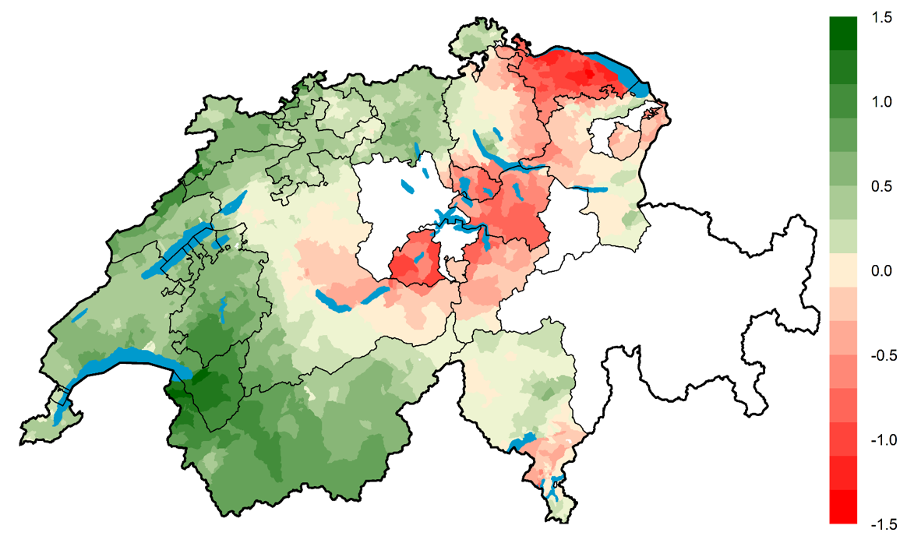
Effect of covariates
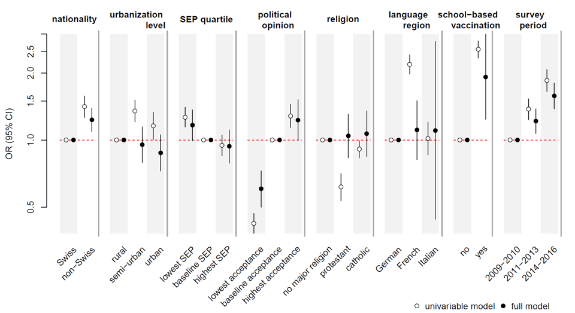
Residual spatial autocorrelation
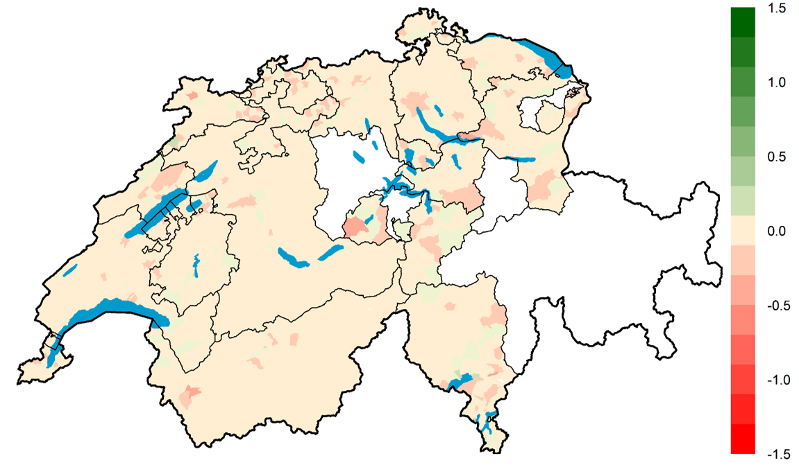
Building complex spatiotemporal models
Cervical cancers among HIV positive women
- Global cohort composed of 1,700,000 persons living with HIV/AIDS
- SAM study, evaluating HIV related cancers in South Africa
- 17% of adult women in South Africa over the age of 25 years are living with HIV
- High burden of cervical cancer: 43.1 cases per 100,000
- 5 times more likely to develop cervical cancer
Exploratory analysis of the crude rates
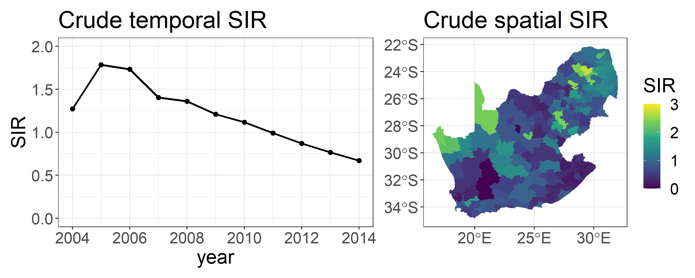
Exploratory analysis of the crude rates (cont)
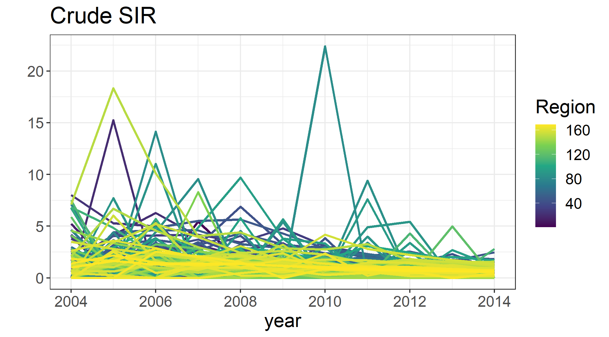
A spatiotemporal model
\[ O_{it} \sim \text{Poisson}(\lambda_{it} E_{it}) \\ \log \lambda_{it} = \alpha + \theta_i + \phi_i + \color{red}{\gamma_t + \xi_t} \\ \theta_i \sim \text{Normal}(0,\sigma_{\theta}^2)\\ \phi \sim \text{ICAR}(W, \sigma^2_{\phi})\\ \gamma_t \sim \text{Normal}(0,\sigma_{\gamma}^2)\\ \xi_t \sim \text{RW1}(\sigma^2_{\xi}) \] Similar with the BYM model in space \(\gamma_t\) is the temporal unstructured and \(\xi_t\) the temporal structured random effect, capturing the temporal autocorrelation.
Space and time seperately
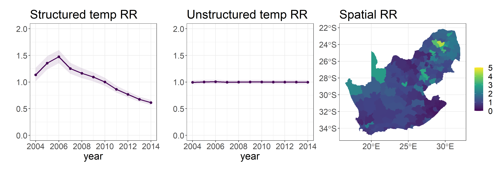
Spacetime (Spaghetti plot)
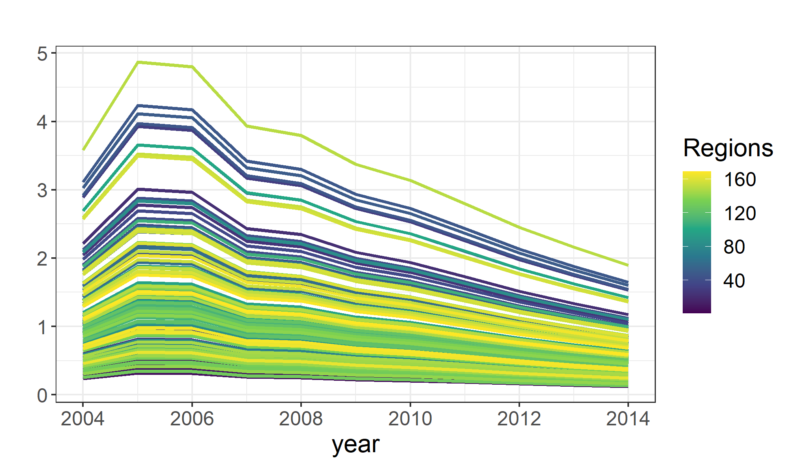
Spacetime (Space by year)
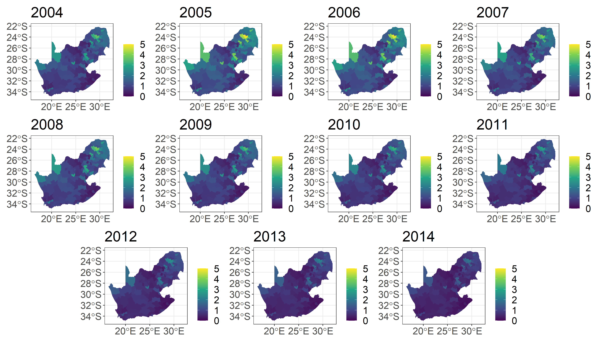
Spacetime interactions
\[ O_{it} \sim \text{Poisson}(\lambda_{it} E_{it}) \\ \log \lambda_{it} = \alpha + \theta_i + \phi_i + \gamma_t + \xi_t + \color{red}{\nu_{it}} \\ \theta_i \sim \text{Normal}(0,\sigma_{\theta}^2)\\ \phi \sim \text{ICAR}(W, \sigma^2_{\phi})\\ \gamma_t \sim \text{Normal}(0,\sigma_{\gamma}^2)\\ \xi_t \sim \text{RW1}(\sigma^2_{\xi}) \]
Summary
- Introduction to disease mapping and CAR priors
- Extension to ecological regression and relevant interpretations
- Separable spatiotemporal models
- Higher spatiotemporal interactions
- Examples using childhood cancers, HPV vaccination and cervical cancers in South Africa
Next : Coding these models in NIMBLE.
Getting ready for the lab
The lab for this session
This goal of this lab is to use
NIMBLEto carry out a disease mapping study.During this lab session, we will:
- Explore ways of visualizing spatial data;
- Define the neighborhood matrix in
R; - Fit and interpret the BYM model in
NIMBLE; and - Perform spatial ecological regression
Questions?